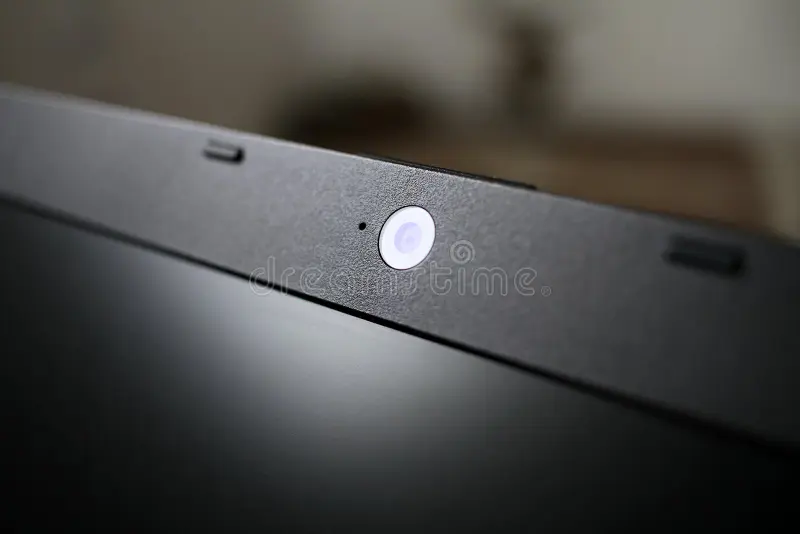
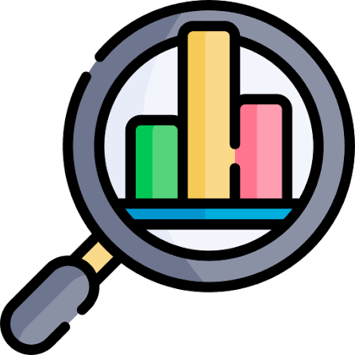
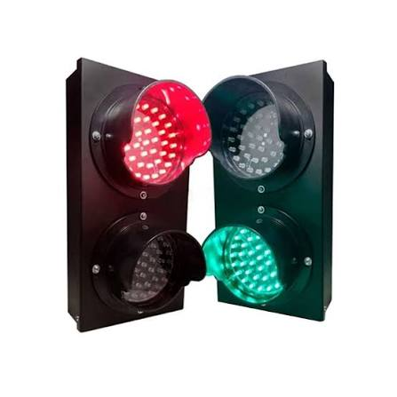
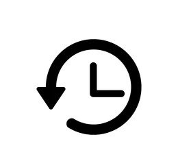

Plataforma inteligente que utiliza Inteligencia Artificial para evaluar la postura de una persona en tiempo real y entregar recomendaciones ergonómicas.
Conocer ProyectoPostureLab es una plataforma que analiza la postura de una persona utilizando visión por computadora e Inteligencia Artificial. El sistema detecta malas posturas, entrega recomendaciones ergonómicas y almacena el historial de evaluaciones para ayudar a mejorar los hábitos posturales.
Muchas personas permanecen más de 8 horas frente al computador.
Una postura incorrecta puede provocar dolores de espalda, cuello y hombros.
Detectar malas posturas a tiempo ayuda a prevenir lesiones musculoesqueléticas.
El proceso de PostureLab se divide en cinco etapas principales.

La cámara registra la postura del usuario en tiempo real.
MediaPipe identifica hombros, cuello y espalda mediante visión artificial.

Se calculan los ángulos corporales para evaluar la postura.

El sistema clasifica la postura utilizando un semáforo ergonómico.

Se almacenan las evaluaciones para observar la evolución del usuario.
• Oficinas
• Estudiantes
• Programadores
• Teletrabajo
• Gamers
• Empresas